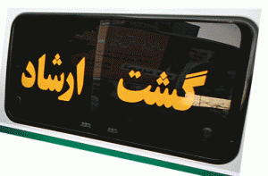

پذيرش > اخبار > هفته سوم شهریور ماه با زنان در خبر: گشت ارشاد ؛ تلاشی بی ثمر / نوید محبی


 هفته سوم شهریور ماه با زنان در خبر: گشت ارشاد ؛ تلاشی بی ثمر / نوید محبی هفته سوم شهریور ماه با زنان در خبر: گشت ارشاد ؛ تلاشی بی ثمر / نوید محبی
28 شهریور 1390 - - نسخه قابل چاپ
تغییر برای برابری:گسترش تفکیک جنسیتی در دانشگاه ها، رد طرح تابعیت ایرانی برای فرزندان حاصل از ازدواج زنان ایرانی با مردان خارجی،بازداشت فرانک فرید و فرشته شیرازی دو تن از فعالان حقوق زنان در ایران و قتل دو روزنگار تلویزیونی در مکزیک از جمله خبرهای هفته ی سوم شهریور ماه بوده است...
جداسازی دختران و پسران در دانشگاه ها ؛ تفکیک جنسیتی یا اجرای مصوبات شورای انقلاب فرهنگی؟
علی رغم آنکه محمود احمدی نژاد دستور توقف تفکیک جنسیتی در دانشگاه ها را داده بود و وزیر علوم گفته بود دستور رئیس جمهور را با جان و دل اطاعت خواهد کرد، اما در عمل هیچ اقدامی در راستای جلوگیری از این طرح نشد. وزیر علوم در این رابطه می گوید که "چیزی با عنوان تفکیک جنسیتی در دانشگاه های کشور وجود ندارد، اصلا این واژه به ما تعلق ندارد برای آن طرف آب است. با استفاده از این واژه در زمین دشمن بازی می کنید"،وی در ادامه اظهارات خود از اجرای مصوبات شورای عالی انقلاب فرهنگی در سال 66 در زمینه عفاف و حجاب در دانشگاه های کشور سخن گفت: "من تاکنون از این واژه استفاده کرده ام یا نه ؟ ما آنچه را که شورای عالی انقلاب فرهنگی در جلسات شماره 114، 116، 117 و 121 در خرداد و تیرماه سال 66 مصوب کرده است، اجرا می کنیم و بروید از وزرایی که تاکنون آن را اجرا نکرده اند بپرسید چرا اجرا نکرده اند؟"
به عبارتی دیگر وزیر علوم معتقد است که کاری جز اجرای مصوبات شورای عالی انقلاب فرهنگی انجام نمی دهد. مصوبات این شورا الزام جداسازی دانشجویان دختر و پسر در کلاس های درس در صورت وجود امکانات،جداسازی در محیط های تردد و نصب اعلانات در دانشگاهها، آزمایشگاهها و کارگاهها و سالنهای تشریح و اتاق کامپیوتر تا جلوگیری از اختلاط غیر ضروری زن و مرد در محیط های اداری و انتخاب منشی مرد برای مردان و منشی خانم برای زنان را شامل می شود که همان نتایج تفکیک جنسیتی را در بر خواهد داشت.
در همین رابطه روزنامه شرق هم خبر از تفکیک جنسیتی دانشگاه های صنعتی امیر کبیر،علامه طباطبایی و دانشگاه یزد داده است.تفکیک جنسیتی در حالی با آغاز ثبت نام دانشجویان در ترم جدید آغاز شده که مسئولین این دانشگاه ها پیشتر اعلام کرده بودند اساسا اجرای تفکیک جنسیتی در این دانشگاه ها امکان پذیر نیست.
همچنین لاله افتخاری نماینده مجلس و عضو کمیسیون آموزش و تحقیقات مجلس نیز در گفت و گو با خبرنگار دنیای صنعت درباره برنامه تفکیک جنسیتی در پیش دبستانی گفته که به دلیل تفاوت در روحیات دختر ها و پسرها با این تفکیک موافق است. اما این نماینده مجلس بدون اشاره به این مساله که اختلاف دختران و پسران خردسال چه مشکلاتی را می تواند به همراه داشته باشد؟ تنها به این پاسخ بسنده کرده که "باید از هم جدا شوند تا مبادا مشکلی! برای آنها پیش بیاید."
مجلس خبرگان رهبري نیز، در پايان دهمین اجلاس رسمى خود در قسمتی از بيانيه ی منتشر شده تأكيد كرده است که به تمام جریانها هشدار مىدهیم و به ویژه "كمرنگ كردن شعارهاى انقلاب" و زیر سئوال بردن مقدسات در عرصه حجاب و عفاف را به شدت محكوم مىكنیم" و در ادامه به مسئولان آموزش عالی توصیه کرده که " در مراكز آموزشى نسبت به اجرایى طرحهایى چون تفكیك جنسیتى كه موجب حفظ حرمت و صیانت بیشتر نسل جوان مىشود، اقدام نمایند" و آقای صافی گلپایگانی از مراجع تقلید هم مجددا بر ضرورت پیگیری و اجرای طرح تفکیک جنسیتی در دانشگاه های کشور تاکید و این مساله را دارای فواید بسیار عنوان کرد.
گشت ارشاد ؛ تلاشی بی ثمر
گرچه روزهای داغ تابستان امسال به روزهای پایانی خود نزدیک شده اما پوشش زنان همچنان چون موضوعی لاینحل برای مسئولین دولتی باقی مانده است،آن طور که از اظهارنظرها و نوشته های سایت های دولتی بر می آید قریب به اتفاق تحلیلگران این سایت ها به این نتیجه رسیده اند که گشت ارشاد و برخوردهای خشونت آمیز نه تنها نمی تواند عاملی بازدارنده باشد بلکه می تواند مساله ی حجاب را به عاملی برای لجبازی جوانان با حاکمیت تبدیل کند.در همین رابطه لیلا میرباقری در سایت دولتی الف در مطلبی تحت عنوان " کاری نکنید که بدحجابی تبدیل به لجبازی شود" ضمن آنکه گشت ارشاد را تجربه ای ناموفق می داند می نویسد:" در چنین شرایطی به نظر نمیرسد تنبیه و توبیخ تنها فایدهای داشته باشد که رفتن سر خانه آخر بدون طی کردن خانههای قبل جامعه را به جایی میرساند که پروندهدار شدن به جرم بدحجابی بشود افتخار و مدرکی برای جنگیدن. دختران و پسران حرف از تعداد دفعاتی بزنند که به این جرم سوار ماشین پلیس شدند و بخندند!"
خبرگزاری محافظه کار فارس نیز با با طرح این مساله که تا به امروز عملکرد گشت ارشاد و برنامه های حجاب و عفاف بی ثمر بوده با ناامیدی می نویسد:"روزگاری پوشیدن مانتوهای تنگ و آب رفته، شالهای کوتاه و آرایشهای زننده نماد بی عفتی به شمار میآمد اما این روزها دیگر آب رفتن مانتوها و پوشیدن شالهای کوتاه، مدلهای عجیب مو و آرایشهای زننده نمادی از آزادی است و برخورد با آن، سلب آزادی افراد در انتخاب نوع پوشش به حساب میآید."
لاله افتخاری، نماینده تهران در مجلس که میهمان بخش خبری ساعت ۱۰ شبکه تلویزیونی قرآن بود نیز در پاسخ به پرسش مجری که تا چه حد وجود گشت های نهی از منکر تایید می کنید، گفته که نود و چند درصد تایید می کنم.اما در توجیه که اینکه چرا تا به حال گشت ارشاد نتوانسته جلوی آنچه بدحجابی خوانده می شود را بگیرد، ماموران گشت ارشاد را مظلوم خوانده و مدعی شده که:" چون بقیه مراکز وظیفه خود را انجام نمی دهند، کار اینها یک وصله ناچسب شده است".
با وجود آنکه برخی از مسئولین و سایت های دولتی تلویحن بر ناکارآمدی گشت ارشاد معترف اند اما دیگر برنامه های طرح حجاب و عفاف نیز همچنان دنبال می شود، در همین راستا معاون سیاسی و اجتماعی استانداری تهران از آغاز بازرسی وضعیت عفاف و حجاب در ادارات دولتی استان از ابتدای مهرماه خبر داد. ،این مسئول تاکید کرده که مدیران دستگاههای اجرایی مؤظف و مکلف به پیگیری، رسیدگی و رفع ناهنجاریهای فرهنگی هستند.و در برخورد با این ناهنجاری ها به طور جدی وارد میدان عمل شوند.
با زنان در زندان ها
در هفته ای که گذشت دو تن از فعالان حقوق زنان در ایران بازداشت شدند.به گزارش کمیته ی گزارشگران حقوق بشر فرانک فرید فعال حقوق زنان عصر رو دوشنبه همزمان با تجمعی که از سوی فعالين محيط زيست در اعتراض به خشک شدن تدريجی درياچه اوروميه برگزار شده بود با ضرب و شتم شدیدی که منجر به خونریزی وی شده بود بازداشت شد.همچنین سایت تغییر برای برابری خبر داده که فرشته شیرازی فعال حقوق زنان در آمل که صبح روز یکشنبه دوازده شهریور به اداره ی اطلاعات این شهر احضار شده بود بازداشت و به زندان آمل منتقل شد که بنا به گزارش های رسیده وی ممنوع الملاقات و تلفن است.
ژیلا بنی یعقوب، روزنامه نگار که به دادگاه فراخوانده شده بود روز یکشنبه 13 شهریور برای بار پنجم پس از انتخابات در دادگاه حاضر شد.درخبری دیگر بهاره هدایت که برای پیگیری درمان بیماریهایش در مرخصی استعلاجی به سر میبُرد، بعدازظهر روز دوشنبه 14شهریور با اتمام دوران مرخصی و عدم تمدید آن به زندان اوین بازگشت.
همچنین مهدیه گلرو، نائب دبیر سابق انجمن اسلامی دانشگاه علامه و عضو شورای دفاع از حق تحصیل با انتشار نامهای از زندان اوین، نسبت به بیعدالتیهای صورت گرفته در حق همسرش اعتراض کرده و آن را مصداقی برای "مجازاتهای خانوادگی " خوانده که در دو سال اخیر باب شده است.
با زنان دیگر کشورها
به گزارش شهرزادنیوز دو زن روزنامه نگار در مکزیک به طرز فجیعی به قتل رسیدند. پیکر های یک گزارشگر سابق فرستنده تلویزیونی "تله ویزا" و یک همکار مجله "کُنترا لینئآ"، در حالی که عریان بودند و دست و پایشان بسته بود، در یکی از پارک های پایتخت مکزیک پیدا شد..
با قتل این دو روزنامه نگار، آنا ماریا یارسلا یارس ریوروز و روُسیوُ گونسالس تراپاحا، شمار روزنامه نگاران به قتل رسیده در سال جاری میلادی به 8 تن رسید. هر دو زن روزنامه نگار جزو افشاگران فساد در کشور و جنایات کارتل های مواد مخدر بودند.همچنین در خبری دیگر سازمان یونسکو اعلام کرده که قریب به 793 میلیون تن از بزرگسالان در سطح جهان از خواندن و نوشتن محرومند که دو سوم آنان را زنان تشکیل داده و نیمی از آنان از چهار کشور پرجمعیت جهان، چین، هند، بنگلادش و پاکستان هستند.بر اساس این گزارش ده کشوری که بیشترین بی سوادان بزرگسال را دارند؛ به ترتیب عبارتند از: هند (283 میلیون)، چین (67 میلیون)، پاکستان (51 میلیون)، بنگلادش (49 میلیون)، نیجریه (35 میلیون)، اتیوپی (29 میلیون)، مصر (18 میلیون)، برزیل (14 میلیون)، اندونزی (13 میلیون) و جمهوری دمکراتیک کنگو (11 میلیون)
ارسال به
بالاترین
،
توییتر
،
فریندفید
،
فیسبوک
در همين بخش :
 پروین ذبیحی برنده جایزه حقوق بشری سازمان غيردولتى اتريشى سودويند شد پروین ذبیحی برنده جایزه حقوق بشری سازمان غيردولتى اتريشى سودويند شد
پخش کارت پستال و بروشور در روز جهانی زن در تهران
تمدید زمان برای امضای بیانیهی جمعی از فعالان زن به مناسبت هشت مارس
مجوزی که در نطفه خفه شد
بیش از 2000 امضا در اعتراض به تبعیض های آموزشی به مجلس تحویل داده شد
ديگر بخش ها :
طرح یک میلیون امضا
|
مقالات
|
سایت نوشته ها
|
اخبار
|
گزارش كمپين
|
گفت و گو
|
علیه سکوت
|
كوچه به كوچه
|
نامه های شما
|
گزارش ویژه
|
گفتگو با اعضا
|
ویژه سالگرد کمپین
|
تصویر برابری
|
دل آرام علی
|
تریبون
|
مقالات
|
تاریخ شفاهی
|
خارج از چارچوب
|
کتابخانه
|
درباره کمپین
|
کمپین در شهرها
|
کمپین در بند
|
صدای تغییر
|
ویژه 22 خرداد
|
لایحه حمایت از خانواده
|
گالری
|
عشا مومنی
|
امیر یعقوبعلی
|
خدیجه مقدم
|
راحله عسگری زاده و نسیم خسروی
|
پروین اردلان،جلوه جواهری، مریم حسین خواه، ناهید کشاورز
|
زینب پیغمبرزاده
|
سعیده امین، سارا ایمانیان، محبوبه حسین زاده، ناهید کشاورز و همایون نامی
|
احترام شادفر
|
نسیم سرابندی زاده،فاطمه دهدشتی
|
وبلاگ مهمان
|
پرونده خرم آباد
|
دستگیری ها
|
مریم مالک
|
پرستو اللهیاری
|
مهرنوش اعتمادی
|
سمیه رشیدی
|
Other Languages
|
همراهان
|
«فراخوان کمپین ده روز با بهاره هدایت»
| English
|